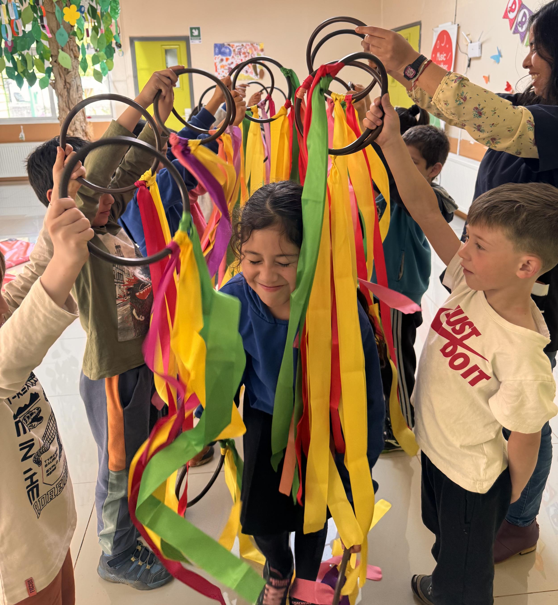

Music Together is an early childhood music program that teaches young children basic skills like keeping a beat, singing in tune and enjoying music as a natural way to express themselves. It was created in 1987 by the Center for Music & Young Children in Princeton, New Jersey, and now runs in more than 300 centres worldwide.
Thanks to Paloma González, we have held sessions in the schools of Mallín Grande and Puerto Guadal and in community spaces open to families. Children join in through singing, movement and play, and along the way they learn to listen, coordinate and share music with others.
The problem is continuity. For now, everything depends on Paloma, who travels from Santiago to lead sessions when she can. Her work has been invaluable, but the distance means our schools have no regular music teaching.
We think music belongs in children's everyday education. Beyond rhythm and listening, it builds confidence, emotional expression, memory, teamwork and well-being, and we want our students to have it every week.
So our next step is to raise funds for a local music teacher to work in the rural schools of the basin every week. Puerto Guadal and the surrounding area have talented young musicians who care about their community and could carry this work forward.
Music brings people together and opens the door to learning and joy. We want it to have a permanent place in our classrooms and our community.
Get in touch
We'd love to hear from you, whether you want to help or simply find out more about our work.